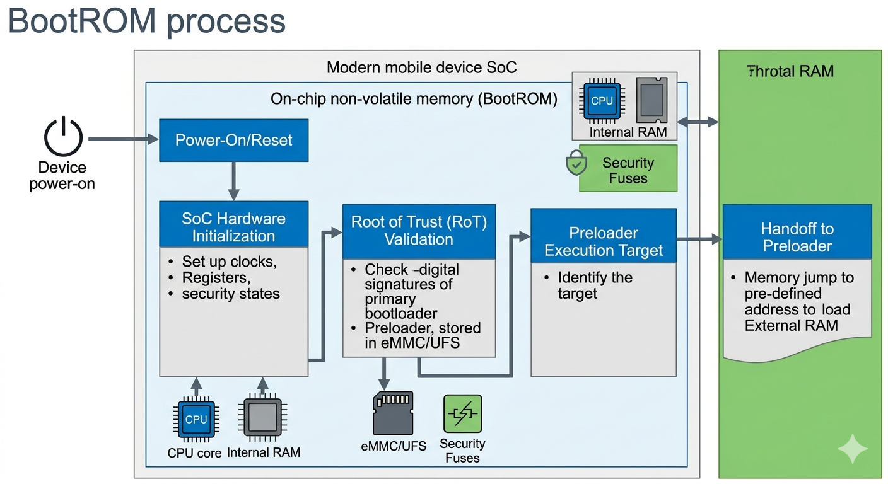
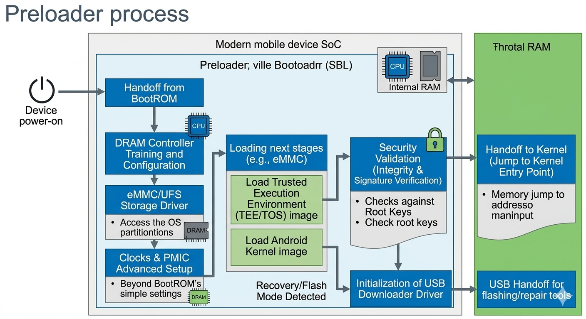
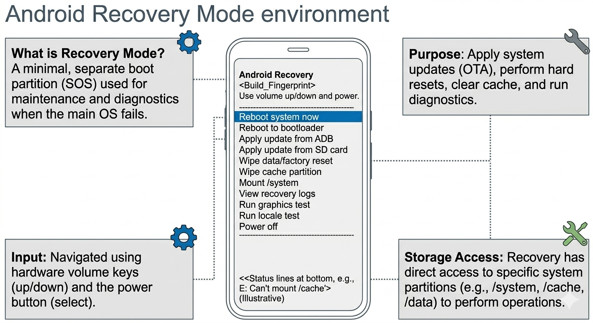
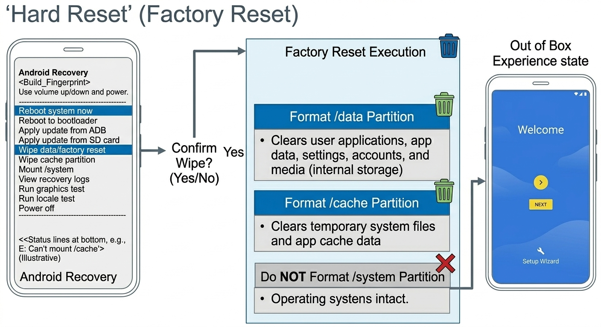
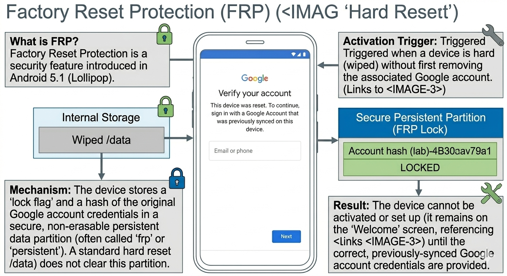
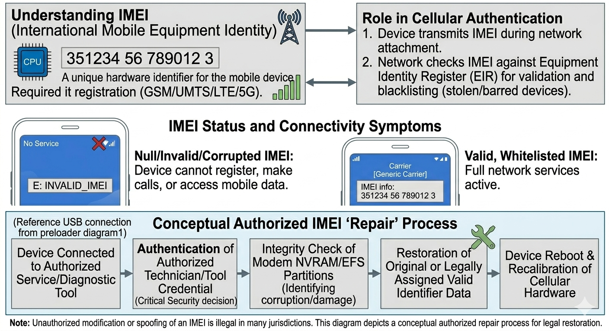
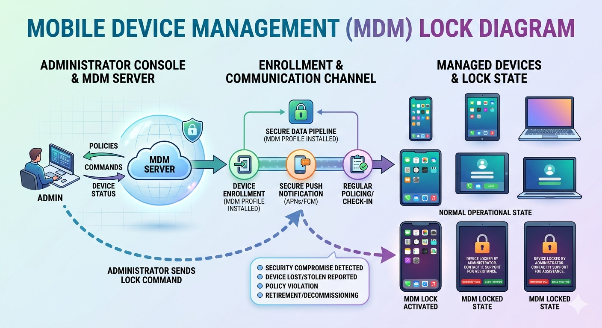
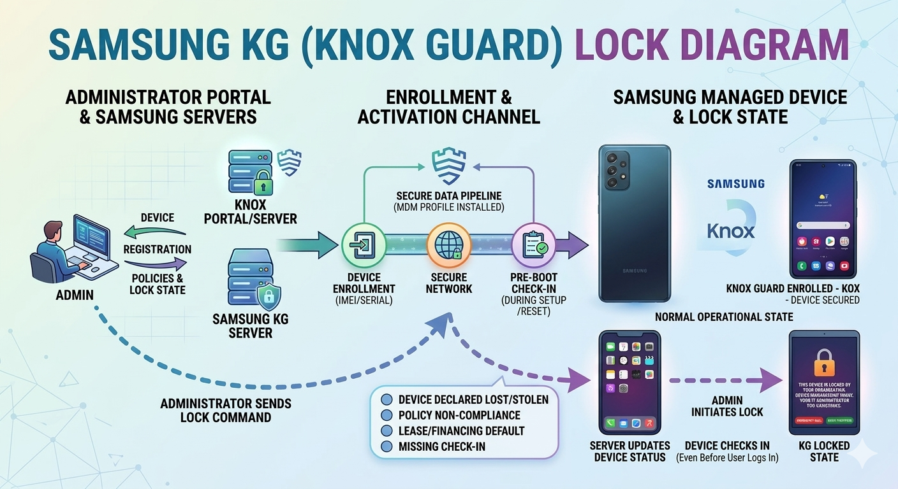

Professional training for mobile repair software and system unlocking.

BootROM (Boot Read Only Memory) is the first code executed when a mobile device powers on. It is permanently stored inside the chipset and cannot be modified or erased. BootROM performs the first stage of hardware initialization and then loads the next boot stage such as the Preloader. Main Responsibilities: • Initialize CPU and hardware • Verify device security • Load the Preloader • Provide emergency flashing mode BootROM mode is very important for mobile technicians because it allows communication with a device even when Android is completely damaged.

Preloader is the second stage in the mobile boot process. After BootROM finishes hardware initialization, the Preloader loads and prepares the device to start Android. Functions of Preloader: • Initialize RAM • Prepare device drivers • Initialize display and USB • Load Android bootloader If the preloader becomes corrupted, the phone may appear completely dead. However, technicians can still access BootROM mode to repair the device.

Recovery Mode is a special environment inside Android devices used for maintenance and troubleshooting. It allows users and technicians to perform system operations without fully booting the Android operating system. Common Recovery Functions: • Factory Reset (wipe user data) • Install system updates • Clear cache partitions • Install custom ROMs • Repair system errors There are two main types of recovery systems: Stock Recovery This is the official recovery system provided by the manufacturer. Custom Recovery Examples include TWRP or OrangeFox which allow advanced features such as installing custom ROMs and backups. Recovery mode is usually accessed by pressing a combination of hardware buttons while powering on the device.

A Hard Reset, also known as Factory Reset, is the process of restoring a phone to its original factory state. This operation deletes all user data such as: • Installed applications • User accounts • Photos and files • Settings and configurations After a hard reset, the phone behaves like a brand new device. Hard reset is commonly used when: • The phone is extremely slow • The device is locked • The system is corrupted • Preparing the phone for resale However, modern Android devices include security features such as FRP which may require the original Google account after resetting.

FRP is a security feature introduced in Android 5.1. When a phone is factory reset without removing the Google account, Android will require the previously synchronized account during setup. Purpose of FRP: • Protect personal data • Prevent stolen device usage • Ensure owner verification Mobile technicians sometimes perform FRP bypass procedures when the original account credentials are forgotten.

IMEI stands for International Mobile Equipment Identity. It is a unique identification number assigned to every mobile device. The IMEI number is used by mobile networks to identify valid devices and prevent illegal usage. Functions of IMEI: • Identify mobile devices on cellular networks • Block stolen devices from network access • Track device authentication If the IMEI becomes invalid or corrupted, the phone may display: "No Service" "Invalid IMEI" Technicians repair IMEI by rewriting the correct number to system partitions such as: • NVRAM • EFS • Modem partition Specialized mobile servicing tools are required to perform IMEI repair.

MDM stands for Mobile Device Management. It is a system used by companies and organizations to control mobile devices remotely. Organizations install MDM software on employee devices to manage security and enforce policies. Capabilities of MDM systems: • Lock or unlock devices remotely • Track device location • Install corporate applications • Restrict device functions • Erase sensitive data remotely Sometimes when companies sell or release devices, the MDM lock remains active and prevents normal usage. Technicians must remove the MDM configuration to restore full device functionality.

KG Lock stands for Knox Guard Lock. It is a security system developed by Samsung to protect devices that are purchased using installment payments. Retailers and finance companies use Knox Guard to ensure that customers complete their payments. Features of KG Lock: • Remote device locking • Payment tracking • Secure device management If a customer fails to complete payments, the device may become locked and display payment warning messages. Professional technicians may remove KG lock using authorized service procedures or specialized unlocking methods.